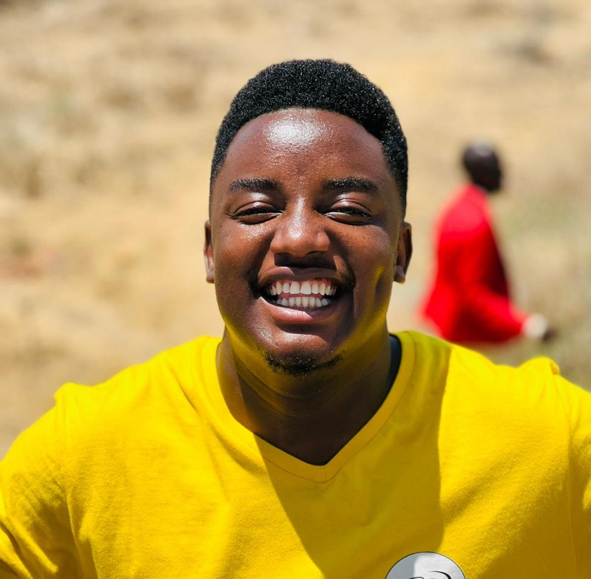

Home / About
About Me
My story, my base, my call
A little about the road that brought me to Arusha, and the community I now call home.

Testimony
From Arusha to the nations
I was born into a Muslim family, but later, my family and I came to know Jesus Christ as our Lord and Savior—and everything changed! During this journey, my family faced rejection because of our faith. Today, I thank God for His faithfulness in our lives. My father and mother are now pastors, faithfully serving and caring for a church in Mwanza, Tanzania.
Since joining YWAM Arusha, God has continued to transform my story and give me opportunities to serve Him as a missionary. I am also grateful for the blessing of marriage to my wife, Suzanna, who is also a YWAM staff member at YWAM Arusha. Together, we serve God through missions, discipleship, evangelism, and reaching people with the love of Jesus Christ. Our desire is to know God and make Him known, trusting Him to use our lives and family for His glory.
My Calling
I have been called to serve the Lord at YWAM. I also want to become a great leader who is well equipped to lead DTS and other training schools. I thank God for His grace and favor upon me. I am so grateful for how God called me to YWAM. One of the ways that God called me was through a dream I had. In the dream, I was back at YWAM Arusha, leading the schools, and outreach teams, translating and also doing different ministries. Another way was through people. I had different people coming to me talking and sharing to me about YWAM and they did a good job convincing me to be back at YWAM and to be a full time Staff. I thank God that this dream came true and now I am here and am happy to serve the Lord and be as a full-time missionary here at YWAM Arusha.
My Ministry
My ministry is to help people, invest, and build people up through training. For example, I'm serving as a Staff member for the Discipleship Training Schools (DTS), as well as doing Mercy Ministries, such as Medical Camps, especially to reach people who have not yet been reached by the Gospel.
My Vision
To champion young people and serve people around me and show God’s Love. I believe that everyone has the right to receive God's love and also experience what it’s like to be served with love. God has been recently speaking to me that I should believe in myself and also to continue trusting God in all means and areas of my life because he is Faithful to me.
What Shapes Me
Values I minister by
Prayer First
Nothing of lasting value happens without a life soaked in prayer.
Servant Leadership
Leading the way Jesus led — by washing feet, not seeking a title.
Raising Others Up
My greatest joy is watching young disciples grow into leaders themselves.
Where I'm Based
YWAM Base, Arusha, Tanzania
The YWAM Arusha base sits at the foot of Mount Meru, in the Arusha region of northern Tanzania.
Arusha, Tanzania — YWAM Base